Behind the Scenes
Before CGI, every on-screen miracle was hand-built. The 1970s special-effects revolution was powered by ingenious physical tools—many invented on the fly by artists and engineers who refused to accept "impossible." Here's a quick look at the key techniques that defined the decade.
The Toolkit
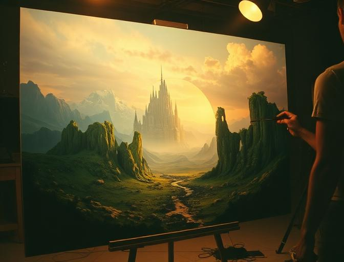
Matte Painting
Artists painted entire worlds on glass, leaving holes for live-action footage to show through. This technique created impossible landscapes on a practical budget.
Used in: Star Wars, Superman
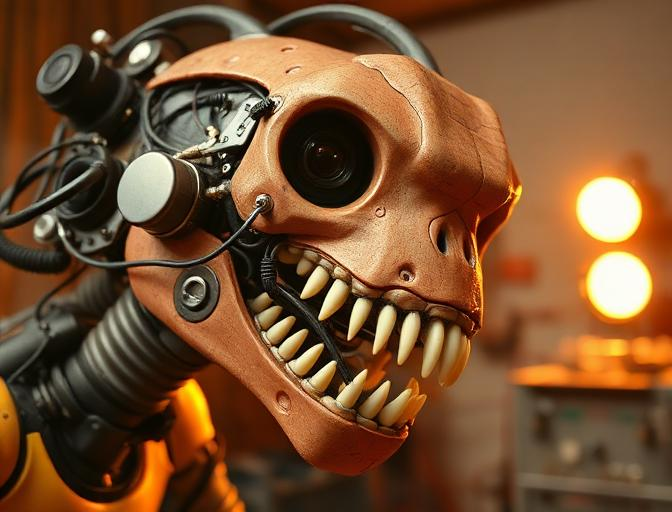
Animatronics
Mechanical puppets with hydraulic or cable-driven movement brought creatures to life on set. Operators worked just out of frame to control every blink and snarl.
Used in: Jaws, Alien
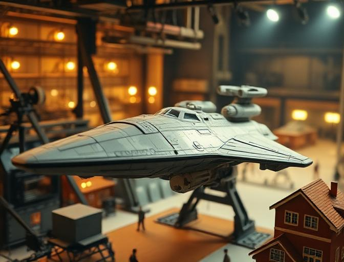
Miniatures & Models
Highly detailed scale models—sometimes just inches wide—were filmed with motion-control cameras to simulate massive ships, cities, and explosions.
Used in: Star Wars, Close Encounters
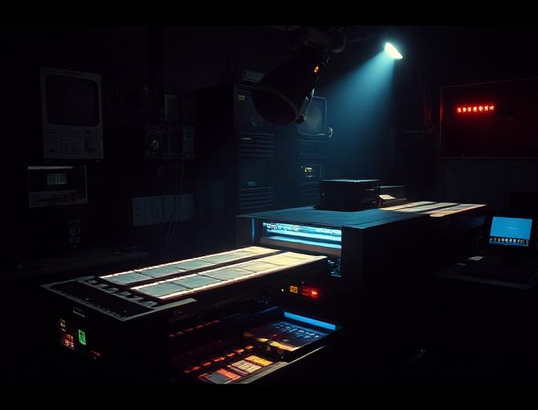
Optical Printing
Multiple film strips were re-photographed through an optical printer to composite layers—combining live action, mattes, and effects into a single frame.
Used in: Star Wars, 2001
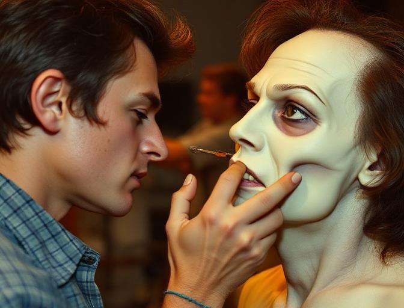
Prosthetic Makeup
Foam latex and silicone appliances transformed actors into monsters, aliens, and the undead. Hours of application created minutes of screen terror.
Used in: The Exorcist, Dawn of the Dead
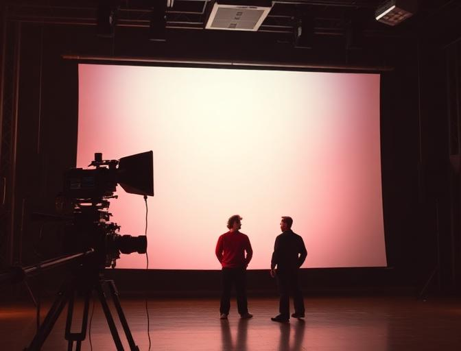
Front Projection
A highly reflective screen behind actors displayed a pre-filmed background via a beam-splitter, creating seamless in-camera composites without blue screen.
Used in: Superman, 2001: A Space Odyssey
Raw Footage vs. Final Cut
Drag the slider to reveal the magic. On the left: what the camera actually captured. On the right: what audiences saw in theaters.
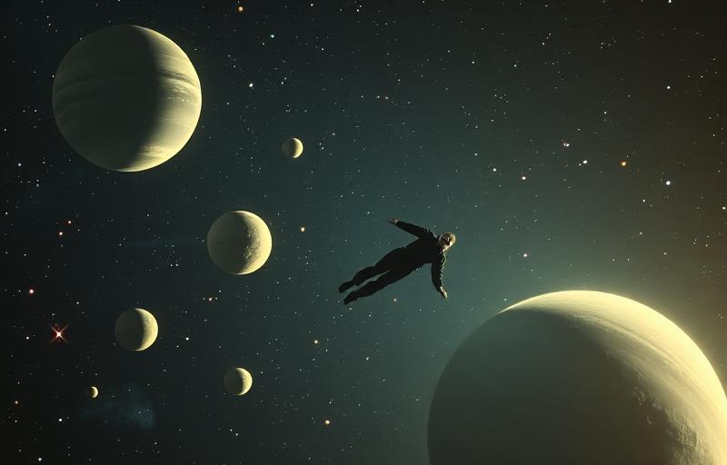
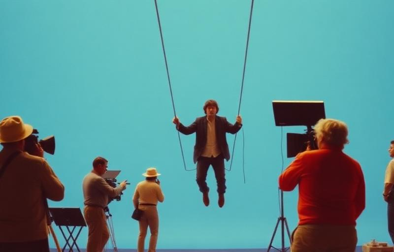
Blue screen compositing — wires, harnesses, and bare stage become a journey through the cosmos.
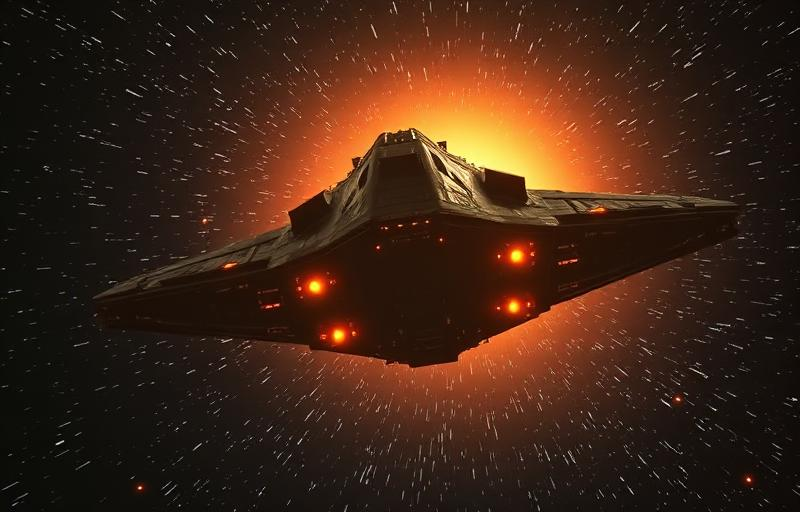
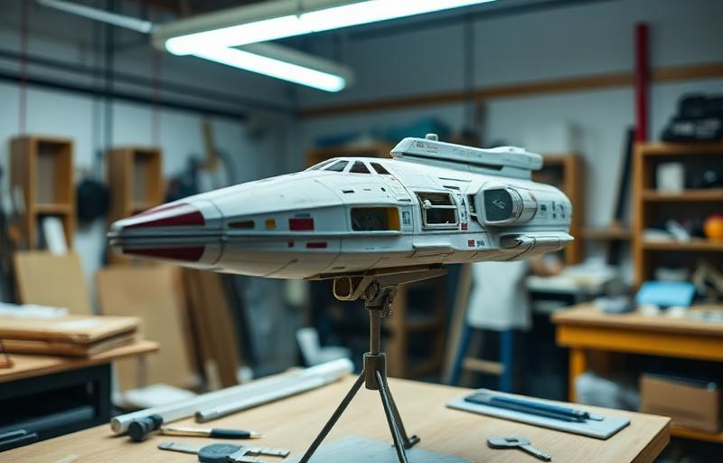
Miniature model on a workshop stand → epic starship in the final film, shot with motion-control cameras.
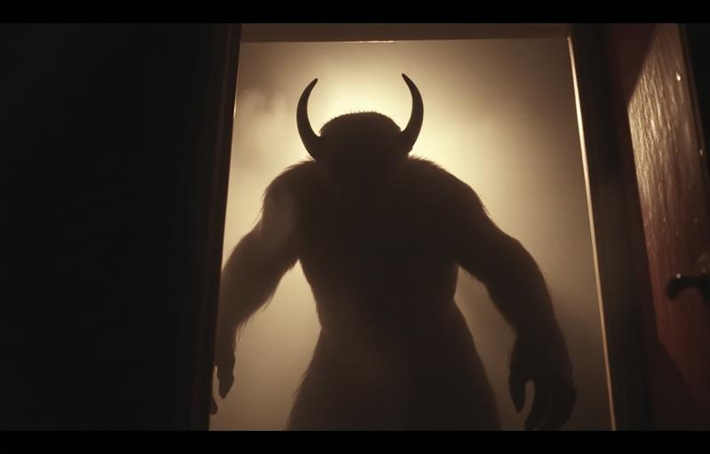
Prosthetic makeup in progress → the terrifying final creature under dramatic film lighting.
The original Star Wars (1977) required over 365 individual effects shots — at the time the most ever attempted. ILM was founded specifically to pull it off.